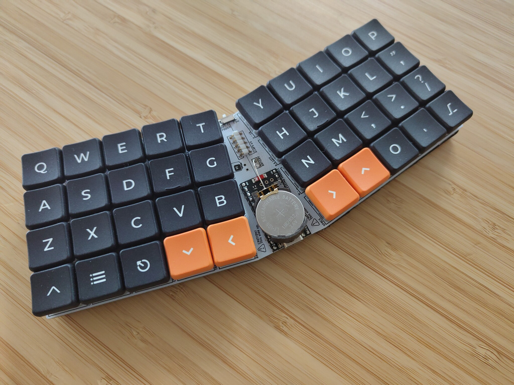
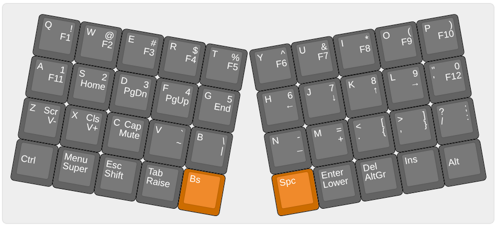

Version 5¶
Published on 2026-06-27 in Klap Keyboard.
I needed a travel keyboard for my portable devices, so I decided to go back to the good old Klap series, and make another version of this compact keyboard. This time, however, it’s going to use an NRF52 for the brains, and run ZMK, because I need it to be a bluetooth keyboard.

This time I gave up on hot-swap sockets, and went with switches soldered directly, to make the keyboard a little thinner. I also used the narrower 17mm spacing of chocfox keycaps, to make the whole thing smaller. The switches are kailh pinks, linear, with very light springs.
The layout I used is similar to my usual everyday layout, minus the dedicated arrow keys, which are now instead on the second layer on the HJKL keys.

For the brains I used a cheap nice!nano clone, mostly because that is supported out of the box in ZMK. I just had to define my own keyboard matrix and layout.
The battery is a rechargeable lithium coin battery, with the battery holder soldered directly on top of the USB socket. I have initially planned to use a pouch battery, but discovered that all the batteries I had were dead from lying in my drawer. The coin battery seems to be sufficient, as the ZMK firmware is very efficient, sleeping as much as it can.
As a finishing touch, I added a 1mm rubber matt on the bottom, to make it stay in place on the table better, and prevent shorts.